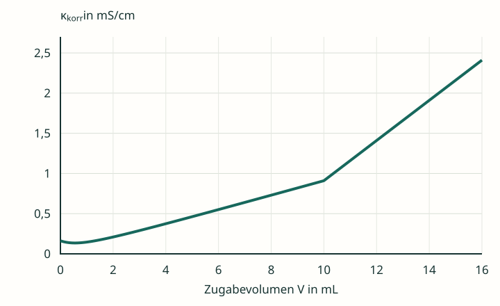
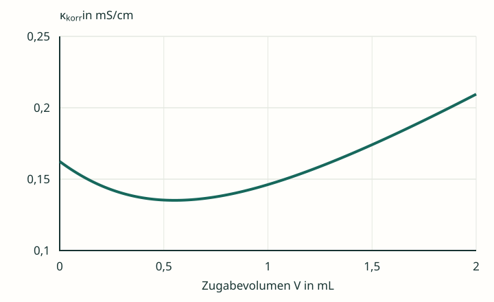

Essigsäure mit Natronlauge
Eine reine Essigsäureprobe enthält insgesamt 1,00 mmol CH₃COOH. Die Natronlauge hat c(NaOH) = 0,100 mol/L. Temperatur und Anfangsvolumen entsprechen der Salzsäureaufgabe 3.2.


Zur Darstellung: Die Kurve ist ein didaktisches Rechenmodell bei 25 °C, keine Messreihe. Gezeigt ist die auf das Anfangsvolumen bezogene Leitfähigkeit κkorr = κ · (V₀ + V)/V₀. Der reine Verdünnungseffekt der Zugabe ist damit herausgerechnet; Ionenbeweglichkeiten gelten als konstant. V₀ = 100,0 mL. Die Volumenkorrektur wird in Material 4.2 erklärt.
Den Kurvenanfang vergrößern


Die Vergrößerung macht ein Detail sichtbar, das in einer groben schematischen Zeichnung oft nicht aufgelöst wird.
Vom Teilchenbestand zur Kurvenform
- Beschreibe die Abschnitte der Kurve. Bestimme das ungefähre Äquivalenzvolumen und prüfe es anhand der gegebenen Stoffmengen.
- Erkläre die deutlich geringere Anfangsleitfähigkeit gegenüber der gleich konzentrierten Salzsäureprobe.
- Erkläre den längeren Anstieg vor dem ÄP und den steileren Anstieg danach. Berücksichtige ungeladene Teilchen und alle wesentlichen Ionensorten.
- Öffne den vergrößerten Kurvenanfang. Überlege, wie ein kleiner anfänglicher Abfall mit dem anschließenden Anstieg zusammenpasst.
- Vergleiche mit 3.2: Warum können sehr unterschiedliche Kurven zum gleichen Äquivalenzvolumen gehören?
Hilfen nach Bedarf
Hilfe 1 · Säurestärke und Ionenbestand
Stelle das Protolysegleichgewicht der Essigsäure auf. Welche Teilchen liegen anfangs überwiegend vor? Sind ungeladene CH₃COOH-Moleküle selbst Ladungsträger? Bei Bedarf hilft Infomaterial 3.3.
Hilfe 2 · Was kommt vor dem ÄP hinzu?
Nutze CH₃COOH + OH⁻ → CH₃COO⁻ + H₂O. Berücksichtige das Na⁺ der Natronlauge zusätzlich. Die Leitfähigkeit hängt nicht nur vom zugegebenen OH⁻ ab, sondern von den nach der Reaktion verbleibenden Ionen.
Hilfe 3 · Zwei Beiträge konkurrieren am Anfang
Am Anfang gibt es bereits einige besonders bewegliche H₃O⁺-Ionen. Ihr Beitrag nimmt bei Zugabe von Base ab. Gleichzeitig wachsen die Beiträge von Na⁺ und Acetat. Welcher Effekt kann bei den ersten kleinen Zugaben überwiegen?
Erklärtext und Vergleich
Die Essigsäurekurve vollständig erklären
Zu Beginn: Die schwache Säure liegt zu einem großen Anteil als ungeladenes CH₃COOH vor. Nur der protolysierte Anteil liefert H₃O⁺ und CH₃COO⁻. Bei gleicher formaler Säurekonzentration ist die Anfangsleitfähigkeit daher viel geringer als die der Salzsäure.
Sehr früher Bereich: Der H₃O⁺-Beitrag nimmt ab, während Na⁺ und Acetat an Bedeutung gewinnen. Wegen der hohen Beweglichkeit von H₃O⁺ kann dessen abnehmender Beitrag zunächst überwiegen. Die Modellkurve fällt deshalb geringfügig. Dieser Anfangsabfall ist weder der Äquivalenzpunkt noch bei jeder Darstellung gleich gut erkennbar.
Der längere Bereich vor dem ÄP: Weitere Essigsäure wird netto zu Acetat umgesetzt. Mit der Natronlauge kommt Na⁺ hinzu. Es entstehen zunehmend gelöste Ionen aus dem überwiegend ungeladenen Säurevorrat; die Leitfähigkeit steigt. OH⁻ aus der Zugabe wird weitgehend verbraucht und liegt noch nicht als stöchiometrischer Überschuss vor.
Am ÄP: 1,00 mmol zugesetztes OH⁻ entsprechen der gesamten titrierbaren Säuremenge. Das sind 10,0 mL Natronlauge. Die wesentlichen Ionen sind Na⁺ und CH₃COO⁻. Ihr Beitrag bleibt erhalten; die Leitfähigkeit ist nicht null. Durch Acetathydrolyse ist die Lösung basisch.
Nach dem ÄP: Weiteres Na⁺ und überschüssiges OH⁻ bleiben in Lösung. Weil OH⁻ besonders beweglich ist, steigt die Leitfähigkeit nun stärker. Der ÄP zeigt sich als Übergang vom flacheren zum steileren Anstieg, nicht als tiefster Kurvenpunkt.
Selbstkontrolle: Hast du zwischen Anfangsabfall, längerem Anstieg und dem Anstieg nach dem ÄP unterschieden? Begründen deine Aussagen den gemessenen Ionenbestand nach der Reaktion?
Vergleich mit Salzsäure · Musterlösung
Beide Proben enthalten die gleiche titrierbare Stoffmenge einer einprotonigen Säure. Deshalb brauchen beide 1,00 mmol OH⁻ und erreichen bei gleicher Konzentration der Natronlauge denselben Wert VE = 10,0 mL.
Die Kurvenformen unterscheiden sich wegen des Ionenbestands: Salzsäure enthält anfangs viele H₃O⁺-Ionen, deren Ersatz durch Na⁺ einen starken Abfall bewirkt. Bei Essigsäure führt der Umsatz des überwiegend ungeladenen Vorrats im längeren Bereich vor dem ÄP zur Bildung zusätzlicher Na⁺- und Acetationen und damit zum Anstieg.
Der geringe Anfangsabfall ist von Konzentration, Gleichgewichtslage und Darstellung abhängig. Eine Schulbuchskizze mit durchgehend flachem Anstieg kann eine vereinfachte Darstellung sein. Für die Auswertung verwendet man passende annähernd lineare Bereiche und nicht den kleinen frühen Tiefpunkt.
Zurück zur Checkliste
Erkläre den Steigungswechsel der Essigsäurekurve und grenze ihn von ihrem möglichen kleinen Anfangsabfall ab.
Fachliche Quellen und Modellgrenzen
- Tel Aviv University: Conductometric Titrations, Tabelle 1 – Grenzleitfähigkeiten bei 25 °C, insbesondere zum Vergleich von Chlorid, Nitrat und Acetat. Die Grafiken verwenden bewusst gerundete Modellbeiträge.
- OpenStax, Chemistry 2e, 14.3: Relative Strengths of Acids and Bases – schwache Säuren und Protolysegleichgewicht.
- OpenStax, Chemistry 2e, 14.7: Acid-Base Titrations – Stöchiometrie und pH am Äquivalenzpunkt.
- Journal of Chemical Education (2010): Conductimetric Titrations: A Predict–Observe–Explain Activity for General Chemistry – Leitfähigkeitsverläufe starker und schwacher Säuren, einschließlich eines kleinen Anfangsabfalls bei Essigsäure.
- IUPAC Gold Book: Conductometric titration – Auswertung über den Schnitt linearer Kurvenbereiche.
Eigenständig entwickelte Lerntexte, Aufgaben, Musterlösungen und Grafiken. Das Modell berechnet das Essigsäuregleichgewicht mit Kₛ = 1,8 · 10⁻⁵ und die Wasserautoprotolyse bei 25 °C, verwendet Konzentrationen anstelle von Aktivitäten und konstante gerundete Ionenbeiträge. κ wird anschließend auf V₀ korrigiert. Der Anfangsabfall ist so qualitativ nachvollziehbar, aber keine Vorhersage exakter Messwerte einer realen Probe.